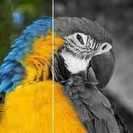

局部色彩

保留圖層中的一種顏色，移除其他顏色的飽和度。
設定
| 設定項目 | 類型 | 範圍 | 預設值 |
|---|---|---|---|
| 顏色 | 顏色 | – | #FF0000 |
| 閾值 | 數字 | 0% 至 200% | 35% |
| 羽化 | 數字 | 0% 至 200% | 25% |
| 飽和度 | 數字 | 0% 至 100% | 0% |
| 收縮 | 數字 | 0.5 至 20 | 5 |

保留圖層中的一種顏色，移除其他顏色的飽和度。
| 設定項目 | 類型 | 範圍 | 預設值 |
|---|---|---|---|
| 顏色 | 顏色 | – | #FF0000 |
| 閾值 | 數字 | 0% 至 200% | 35% |
| 羽化 | 數字 | 0% 至 200% | 25% |
| 飽和度 | 數字 | 0% 至 100% | 0% |
| 收縮 | 數字 | 0.5 至 20 | 5 |